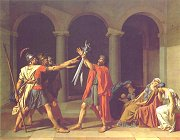
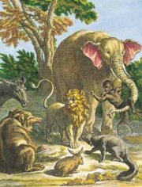

Co víš o Napoleonově Vítězném oblouku v Paříži?
Ingres: Turecká lázeň

|
KLASICISMUS
Klasicistní sloh vznikl ve Francii v polovině 17. století (za vlády Ludvíka XIII.). Vyznačuje se důsledným návratem k antice a podrobným rozdělením umění na vysoké a nízké žánry, formy i náměty. Upřednostňuje urozené hrdiny, vznešené myšlenky, žánrovou čistotu (zákaz míšení žánrů a forem) a antické náměty. Za vysoký žánr je považována tragédie, óda, epos, sonet a poezie vůbec, k nízkým patří komedie, román, satira, bajka či píseň a próza. V dramatu je ideálem zákon trojí jednoty.
Mezi klasicistní stavby můžeme zařadit zámecký komplex Versailles [versaj], který začal budovat „král Slunce“ Ludvík XIV., a pařížský Pantheon. Klasicismus se prosadil i ve Spojených státech amerických – washingtonský Kapitol.
Průkopníkem klasicismu v malířství byl Francouz Nicolas Poussin [pusen] (1594-1665) a krajinář Claude Lorrain [loren] (1600-1682). Vrcholná díla vytvořili Jean Auguste Dominique Ingres [éngr] (1780-1867), Jaques Louis David (1748-1825), jakobín (Maratova smrt) a oficiální portrétista Napoleona, a německý malíř a teoretik Anton Raphael Mengs (1728-1779).
Mezi sochaři vynikal Ital Antonio Canova (1757-1822).
Která instituce sídlí ve washingtonském Kapitolu?
|

David: Napoleon Bonaparte
David: Maratova smrt
Poussin: Parnas
|
Nicolas Boileau-Despréaux (1636-1711)
Francouzský básník Nicolas Boileau-Despréaux [nikola boalo depreo] byl královským dějepiscem a rozhodčím ve věcech umění na dvoře Ludvíka XIV. Přátelil se s Molièrem, Racinem a La Fontainem. Napsal programovou skladbu Umění básnické a sbírky Satiry a Listy.
|
Nicolas Boileau: Umění básnické
Ve své básni Umění básnické (L’art poetique) popsal Boileau hlavní zásady klasicistní poetiky. Toto dílo bylo přijato s obrovským nadšením a stalo se základem celé klasicistní literatury. Boileau viděl ideál v umírněnosti a vyrovnanosti výrazu, pravděpodobnosti děje a v síle básnického génia. Vybízí umělce, aby napodobovali antické formy, ale sám je popisuje velmi mlhavě: idyla je „prostá, naivní, jemná, lahodící uchu” bez „hrubých slov venkovanů“, elegie má „trochu vyšší tón a dlouhý černý šat“ a óda opěvuje “krásný chaos”. Jasnější je v požadavku trojí jednoty:
Ale my, kterým um pravidla stále pějě
chceme, ať důvtipně snují se všechny děje
a ať jen na jednom místě a v jednom dni
jeden čin divadlo napětím naplní
|
Umění básnické navazuje na Horatiův List Pisonovcům z jeho sbírky Epištoly a Aristotelovu Poetiku.
|
Mengs: Marie Luisa
|
Pierre Corneille (1606-1684)
Dramatik Pierre Corneille [pjér kornej] bývá někdy řazen k baroku. Přijal členství ve Francouzské akademii, ale později se ocitl v nemilosti. Je autorem her Cid, Medea, Andromeda, Horatius nebo Lhář.

David: Přísaha Horatiů
Co je obsahem Cidova monologu?
Srovnej ho se známým monologem Hamleta.
Souhlasíš se Cidovými názory? Proč?
|
Pierre Corneille: Cid
Drama Cid [sid] vypráví o vztahu milenců Rodriga a Chimeny, pro které je čest důležitější než láska. Děj dramatu Cid se odehrává ve Španělsku. Rodrigo-Cid v souboji zabije otce milované Chimeny. Urazil totiž jeho otce a čest rodiny je mu nade vše. Chimena žádá krále, aby Rodriga potrestal, přestože ho miluje. Rodrigo se mezitím vyznamená v boji proti Maurům, nakloní si tak přízeň krále a získá titul Cid (pán). V souboji o Chimeninu ruku porazí svého soka a král nakonec svolí, aby se po roce smutku vzali.
Námět hry vychází ze španělského středověkého cyklu o Cidovi. Navíc Corneille v této tragikomedii porušil všechny zákony klasicistního dramatu, což vedlo kritiky k naprostému odsouzení hry i jejího autora.
|
Zákon trojí jednoty v dramatu
Ideální klasicistní drama splňuje zákon trojí jednoty – místa (děj se odehrává na jednom místě), času (během jednoho dne) a děje (zachování čistoty žánru komedie nebo tragédie, nesměly se tedy psát tragikomedie).

Dobové dekorace k Andromedě

|
Jean Racine (1639-1699)
Jean Racine [žan rasin] se hlásil k jansenismu. Byl nejuznávanějším francouzským dramatikem, ale konec života strávil v nemilosti. Proslul jako autor tragédií na antické náměty (Faidra, Ifigenie v Aulidě, Andromacha...)
|
Jean Racine: Faidra
Racinova tragédie Faidra vypráví antický příběh o žárlivosti. Žena krále Thésea Faidra se zamiluje do svého nevlastního syna Hippolyta. Jeho srdce ale patří jiné, a proto Faidru odmítne. Nevlastní matka se mu chce pomstít. Řekne manželovi, že o ni jeho syn usiluje, Théseus jí uvěří a svolává na syna pomstu bohů. Hippolytos umírá a zdrcená Faidra spáchá sebevraždu.
Stejnou látku zpracoval už řecký dramatik Euripides (Hyppolitos) a Říman Seneca (Phaedra).
|
Poussin: Théseus

Lorrain: Námořní přístav
Charakterizuj obě postavy.
Co je incest?
|
Molière (1622-1673)
Jean-Baptiste Pocquelin [žan batist poklen], známější pod jménem Molière [moljér] vystudoval práva, ale živil se jako herec, dramatik a režisér. Vlastnil kočovné divadlo, se kterým putoval po Francii. Později se stal ředitelem královského divadla v Paříži, se kterým hrál před samotným králem Ludvíkem XIV. Měl neustále problémy s cenzurou a nakonec se ocitl v nemilosti. Během představení komedie Zdravý nemocný Molière omdlel a brzy na to se odebral na věčnost (bez lékařské pomoci i posledního pomazání). Molière je autorem 33 komedií: Směšné preciózky, Sganarel, Škola pro muže, Škola pro ženy, Tartuffe, Don Juan, Misantrop, Měšťák šlechticem, Amfitryon, Láska lékařem, Lékařem proti své vůli, Skapinova šibalství, Lakomec nebo Zdravý nemocný. V jeho hrách vystupují hlavně obyčejní lidé – kupci, měšťané a sluhové.
O čem jsou komedie Zdravý nemocný, Don Juan a Misantrop?
Koho označujeme výrazem donchuán?
V čem připomíná hra Lakomec komedii dell’arte?
Dobová ilustrace k Molièrově Škole pro muže
Co si myslíš o Tartuffovi?
|
Molière: Lakomec
Lakomý lichvář Harpagon chce oženit syna Kleanta s bohatou vdovou a vdát dceru Elišku za starého boháče Anselma. Eliška ovšem miluje Valéra, který z lásky k ní slouží u Harpagona zcela zadarmo, a Kleantes miluje Marianu, o kterou se zároveň uchází i jeho otec. Naštěstí Kleantův sluha Čipera vymyslí plán, jak Harpagona přelstít. Ukradne mu pokladnici, ve které je třicet tisíc dukátů. Aby je Harpagon dostal zpět, musí se Mariany vzdát. Nakonec svolí i k sňatku svých dětí, protože se ukáže, že Mariana a Valér jsou děti boháče Anselma...
Podobný námět zpracoval římský dramatik Plautus ve své Komedii o hrnci.
Molièrově společnosti konkurovala Italská komedie.
Molière: Tartuffe aneb Podvodník
Tartuffe [tartif] je pokrytec, který dává na odiv svou čestnost a zbožnost. Vetře se k bohatému měšťanu Orgonovi, zneužije jeho důvěry a zavede v jeho domě asketická pravidla, která sám nedodržuje. Orgon svěří svůj majetek i osud do Tartuffových rukou, ale nakonec prohlédne jeho intriky. Schová se totiž pod stůl a slyší, jak Tartuffe svádí jeho manželku Elmíru. Za Orgona se postaví i král, protože se ukáže, že Tartuffe je špiclem Svaté kabaly.
Představení Tartuffa bylo součástí jedenáctidenních slavností Rozkoše kouzelného ostrova, které pro dvůr Ludvíka XIV. inscenoval Molière na zámku Versailles.
|

Pierre Mignard: Molière
Molière v kostýmu Sganarela
Dobová ilustrace k Tartuffovi

Rozkoše kouzelného ostrova
|
Carlo Goldoni (1707-1793)
Italský dramatik Goldoni psal stručné scénáře pro komedie dell’arte i klasické dramatické texty. Z 218 her se dodnes hrají komedie Sluha dvou pánů, Chytrá vdova, Mirandolina, Zamilovaní nebo Poprask na laguně. Cenné jsou jeho Paměti.
|
Carlo Goldoni: Sluha dvou pánů
Hlavním iniciátorem zápletek Goldoniho komedie Sluha dvou pánů je věčně hladový popleta Truffaldino, který se rozhodl pracovat zároveň pro dva pány (Beatrici a Florinda). Hra je založena na řadě záměn, omylů a převleků. Beatrice hledá milovaného Florinda. Přestrojí se za svého mrtvého bratra Fedriga, ale když přijde na zásnuby Silvia s Clarice, původní Fedrigovou snoubenkou, způsobí značný rozruch. Po mnoha komických peripetiích se vše vysvětlí a milenecké páry se šťastně políbí – Clarice se Silviem, Beatrice s Florindem a Truffaldino s Claricinou služkou.
|

Ingres: Slečna Rivierová
Na čem stojí komičnost této ukázky?
Sehraje ukázky z klasicistních dramat v této kapitole.
|
Bajky

La Fontainovy bajky ilustroval francouzský malíř Jean-Baptiste Oudry [udry] (1686-1755).
|
Bajky
Bajky byly velmi oblíbené ve starověku, středověku i renesanci. Tomuto žánru se věnovala řada významných spisovatelů, především francouzský básník Jean de La Fontaine, Němec Gotthold Ephraim Lessing a Rus Ivan Andrejevič Krylov. Většinu námětů k jejich bajkám nacházíme již u Ezopa.
Napiš vlastní bajku. Nezapomeň na závěrečné mravní ponaučení.
|
Francouzský básník Jean de La Fontaine [žan de lafonten] (1621-1695) byl členem Francouzské akademie. Kromě Bajek je autorem veršovaných Elegií a Povídek, románu Láska Psyché a Kupida a operních libret.
Německý spisovatel Gotthold Ephraim Lessing (1729-1781) pracoval jako knihovník. Psal divadelní hry (Mína z Barnhelmu neboli Vojácké štěstí, Emilia Gallotti, Moudrý Nathan), Bajky a Epigramy. Ve svých teoretických pojednáních se hlásil k osvícenství.
Ruský básník Ivan Andrejevič Krylov (1769-1844) pracoval jako úředník, ale kvůli svým satirickým básním se ocitl pod policejním dohledem. Po vydání Bajek získal slávu, peníze i uznání cara.
|
Internetové stránky
Boileau, informace
Boileau, díla
Molière, informace
Molière, informace
La Fontaine, informace
La Fontaine, informace
La Fontaine, informace
Goldoni, hry
Vysvětli význam slov klasifikace, klasický, klasicistní, klasika, klasik a klasa.
|
Doporučená četba
Boileau, Nicolas: Básnické umenie, přel. J.Švanter, Tatran, Bratislava 1990
Brett, Vladimír: Molière, Orbis, Praha 1967
Bukáček, Josef: Carlo Goldoni, Osobnost a doba, NČSAV, Praha 1957
Bulgakov, Michail: Život pana Molièra, přel. A.Morávková, Lidové nakladatelství, Praha 1979
Corneille, P.: Cid, přel. S.Kadlec, Praha 1956
Kopal, J.: Literární teorie Boileauova, Praha 1923
Krylov, Ivan Andrejevič: Bajky, přel. H.Vrbová, Lidové nakladatelství, Praha 1973
La Fontaine, Jean de: Bajky, Odeon, Praha 1983
Lessing, Gotthold Ephraim: Hry, básně, bajky, epigramy, přel. E.Petiška
Molière: Hry (4 svazky)
Molière: Lakomec, Misantrop, Tartuffe, Mladá fronta, Praha 1966
Molière: Versailleská improvizace, Praha 1928
Goldoni, Carlo: Komedie (3 svazky), SNKLHU
Racine, J.: Britannicus, Ifigenie, Atalia, Praha 1990
Racine, J.: Faidra, přel. G.Francl, Orbis, Praha 1960
|
Připrav si referát o některé z uvedených knih nebo internetových stránek.
Odvoď základní pravidla pro výslovnost francouzských jmen.
Canova: Amor a Psyché
|
|